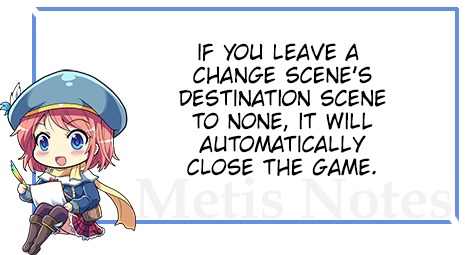

ow that we covered the basics and some essential knowledge, it's time to learn how to move from one scene to the next.
基本场景切换默认情况下，基本场景切换是基本的淡出。
要添加命令，请转至
场景 ->

首先，添加命令
和
 。HTML 理解选项和标签。HTML 理解选项和标签
。HTML 理解选项和标签。HTML 理解选项和标签